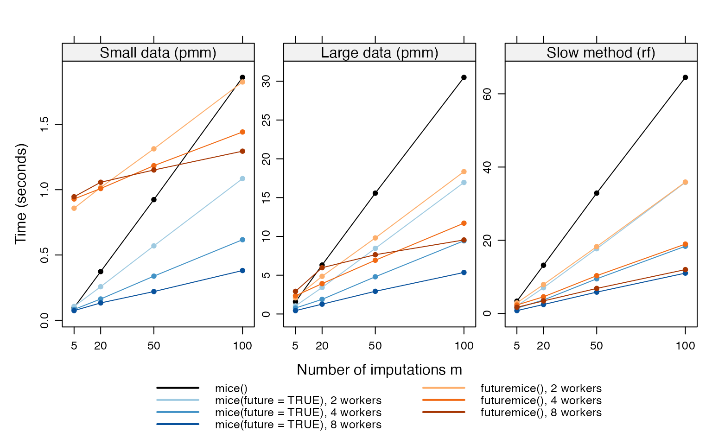
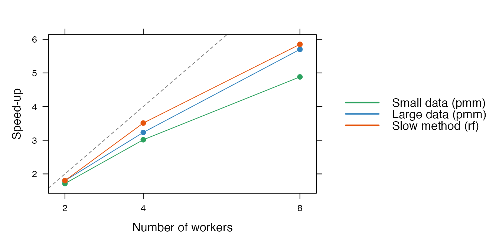

Parallel imputation: benchmarks
2026-11-11
Source:vignettes/parallel-benchmark.Rmd
parallel-benchmark.RmdIntroduction
This vignette measures when running the chains in parallel pays off,
and compares mice(parallel = TRUE) with sequential
mice() and with the wrapper futuremice() (Volker and Vink 2022). It follows the design of
Volker and Vink (2022), and adds a slow
imputation method and more numbers of imputations. The vignette Parallel imputation explains how to use
parallel = TRUE.
The timings were computed beforehand with the script
data-raw/parallel-benchmark.R in the source of the package,
and are read from a file. They depend on the machine, so treat them as
an indication of the pattern, not as absolute numbers. The results below
were obtained on:
| Item | Value |
|---|---|
| Date | 2026-11-11 |
| CPU | Apple M4 Pro |
| Cores | 14 |
| R | R version 4.5.2 (2025-10-31) |
| mice | 3.19.12 |
| future | 1.75.0 |
Design
The data are drawn from a multivariate normal distribution with zero
means, unit variances and correlations of 0.5. Eighty percent of the
cases get missing values, completely at random (MCAR), by
ampute(). There are three scenarios:
| Scenario | Description |
|---|---|
| small | Small: 1000 x 4, pmm |
| large | Large: 10000 x 8, pmm |
| slow | Slow method: 2000 x 8, rf |
The rf method fits a random forest with the
ranger package for every variable in every iteration, which
makes it much slower than pmm. ranger uses two
threads by default, also within a worker. All runs use
maxit = 5, and every combination is repeated 3 times; the
figures show the median time. We compare:
-
mice(): the sequential sampler, on one core. -
mice(parallel = TRUE): the parallel sampler, on amultisessionplan with 2, 4 or 8 workers that was started before the timing, so that the workers are reused. This is how you would use it for repeated imputations (see below for the cost of starting workers). -
futuremice(): the wrapper withn.coreset to 2, 4 or 8. It starts and closes its own workers in every call, so these timings include the start-up of the workers.
Starting the workers
Each worker is a separate R session. A new worker has to start R and
load mice and its dependencies before it can impute. The
table shows the median time of a tiny imputation on new workers (cold)
and on workers that are already running (warm):
| Workers | Cold (s) | Warm (s) | Start-up (s) |
|---|---|---|---|
| 2 | 0.76 | 0.03 | 0.73 |
| 4 | 0.84 | 0.04 | 0.80 |
| 8 | 0.94 | 0.05 | 0.89 |
Starting the workers costs about 0.8 seconds per call on this
machine. mice(parallel = TRUE, n.core = 4) pays this cost
in every call, as does futuremice(). Setting up the workers
once with future::plan(multisession, workers = 4) pays it
only for the first call. For a single long imputation the difference
does not matter, but for many short imputations, for example in a
simulation study, it does.
Results

Median time (seconds) against the number of imputations m, per scenario and number of workers. Note the different vertical scales.

Speed-up of mice(parallel = TRUE) relative to sequential mice(), for m = 100. The dashed line is the ideal speed-up, equal to the number of workers.
When does it pay off?
Small data. For 1000 cases and 4 variables, one imputation takes a few milliseconds. Sequential
mice()needs 0.10 seconds form = 5and 1.86 seconds form = 100. On running workers,mice(parallel = TRUE)with 8 workers needs 0.38 seconds form = 100. But if the workers have to be started first, the start-up cost of about 0.8 seconds is larger than the whole sequential run for smallm. For small data, parallel imputation only helps with many imputations, on workers that are already running.Large data. For 10000 cases and 8 variables,
mice()takes 1.6 seconds form = 5and 30.5 seconds form = 100. With 8 workers, this becomes 0.44 and 5.4 seconds, a speed-up of 5.7 form = 100. Including the start-up of new workers, parallel imputation pays off fromm = 20on; form = 5the gain is small.Slow method. With
rf,mice()takes 64.5 seconds form = 100, andmice(parallel = TRUE)with 8 workers 11.0 seconds, a speed-up of 5.8. The slower the imputation, the smaller the share of the fixed costs, and the closer the speed-up gets to the number of workers.Number of workers. The speed-up grows with the number of workers, but less than proportionally (second figure). With
mchains, at mostmworkers can be busy, and withm = 5and 8 workers, three workers are idle. Each worker also has to receive the data and return its chains.
The time per chain is the same for all values of m, so a
parallel run takes roughly the time of m / workers
sequential chains, plus a fixed overhead. A rule of thumb: if one
sequential run takes less than a few seconds, the parallel run saves
little; if it takes minutes, the parallel run is close to
workers times faster.
Comparison with futuremice()
futuremice() splits the m imputations into
one block per worker, and runs a complete mice() call for
each block, including its own set-up and starting imputations. The
blocks are then combined with ibind().
mice(parallel = TRUE) sets up the imputation model and the
starting imputations once, and only runs the chains on the workers.
For m = 100 with 8 workers, futuremice()
took 9.5 seconds for the large data and 12.0 seconds for the slow
method, against 5.4 and 11.0 seconds for
mice(parallel = TRUE). About 0.8 seconds of the difference
is the start-up of the workers, which futuremice() pays in
every call. The remainder is probably due to the repeated set-up per
block and the combining of the blocks. For small data, the start-up cost
dominates: futuremice() is only faster than sequential
mice() for m = 100 (1.30 against 1.86 seconds
with 8 workers).
Moving from futuremice() to
mice(parallel = TRUE)
Most arguments of futuremice() have a direct
counterpart, or are no longer needed:
futuremice() |
mice(parallel = TRUE) |
|---|---|
n.core = 4 |
n.core = 4, or set up the workers once
with future::plan(multisession, workers = 4)
|
parallelseed = 123 |
seed = 123 |
seed (gives identical imputations on all
cores) |
not needed |
use.logical = FALSE |
future::plan(multisession, workers = parallelly::availableCores(logical = FALSE)) |
future.plan = "multicore" |
future::plan(multicore) before the
call |
packages = "miceadds" |
not needed: methods from packages are loaded on the workers, if installed |
globals = "mice.impute.mymethod" |
not needed: user-written methods, their helper
functions and objects used in post are sent along |
... |
... |
The results differ in a few other ways:
-
Reproducibility.
futuremice()gives reproducible results for a givenparallelseedandn.core.mice(parallel = TRUE)gives the same imputations for a givenseed, whatever the number of workers. -
Plan.
futuremice()sets the plan tosequentialwhen it returns, also if you had set up workers yourself.mice(parallel = TRUE)leaves a plan set by the user untouched. -
Logged events.
ibind()keeps theloggedEventsof the first block only, sofuturemice()drops the events logged by the other workers.mice(parallel = TRUE)collects the events of all chains. -
Continuing. An object from
mice(parallel = TRUE)can be continued withmice.mids(), in parallel, with the same result as a single run. -
Starting imputations.
futuremice()draws the starting imputations separately for each block;mice(parallel = TRUE)draws them once, asmice()does.
Reproducing the benchmark
To rerun the benchmark on your own machine, install the version of
mice to test (the workers load the installed version), and
run from the root of the source package:
source("data-raw/parallel-benchmark.R")This takes about half an hour on a laptop, and writes
vignettes/parallel-benchmark.rds.